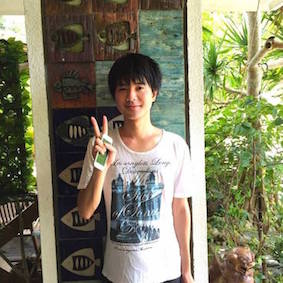
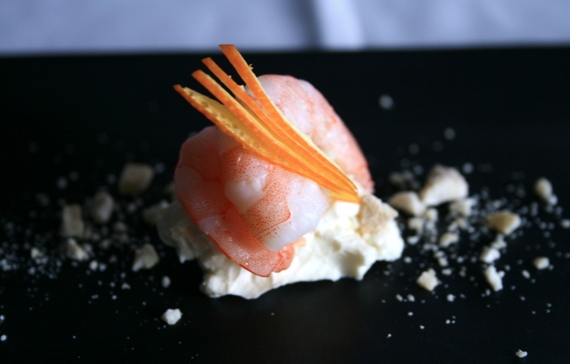
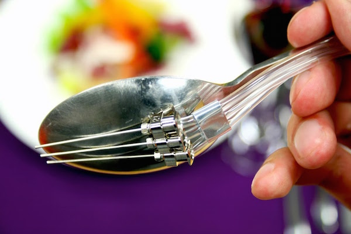

Ph.D Candidate @ The University of Tokyo, Applied Computer Science (SV: Prof. Jun Rekimoto)
Sony Computer Science Laboratories (Sept 2015 - Mar 2016)
Takram (Apr 2014 - Mar 2015)
IPA Mitoh Project (Aug 2012 - Feb 2013)
Igarashi Design UI Project (Jun 2010 - Mar 2013)
I'm a researcher and designer with a backgorund of Computer Science and Augmented Reality.
My research focuses on Human Computer Interaction,
Human Augmentation, and my interests include introducing new methods for
enhancement of human creativity with computational support. I enjoy swimming, cooking and competitive programming as hobby.
Currentry on the job market.
C.V. /
Contact /
Rekimoto Lab /
Art

Zamami Island, Okinawa, Japan
Projects
{kind=link}
Chef's Hippocumpas :Chef's Hippocumpas is a project to generate "new and good" collections of ingredient from a database of good collection of ingredient. This project aim to enhance human creativity using computational creativity. As a system, it applies NLP algorithm to food comparison (Word2Vec), measures "creativity" of a collection by a simple equasion. See details
{kind=link}
Programmable Food :Programmable Food is a concept that makes food programmable to realize richer experiences of fine dinning. As the first step, MIDAS FORK enables chefs to program transition of tastes such as bitter to sweet or sweet to bitter. The system consists of a programming interface and computationally enhanced cutlery. Chefs can program the transition of tastes in advance, and the cutlery seasons foods by shooting seasonings using sensing and pumping mechanism.
Y.Kita and J.Rekimoto. Digitally Enhanced Utensils: Designing Time-sensitive Gustations.16th International Conference on Human-Computer Interaction 2014
Granted $18,000 by Exploratory Software Project, IPA MITO, 2012-2013 (Project Completed)
{kind=link}
DEEP LOOK: Dynamic Focus Interactions :This system adds a dynamic focus interaction on a picture to provide a depth perception of the image. The system makes layers of viewer's gaze point to be in the focus, others out of the focus using a gaze tracker and image processing algorithm. Through this system, a Monet's painting turns from a static image into dynamic 3D image, or an complex subway map emphasizes the focusing lines as if they are floating on the other lines. The system is applicable for a novel art gallery, education or general guidance.
Appeared at iii Exhibition, The University of Tokyo, August 2012